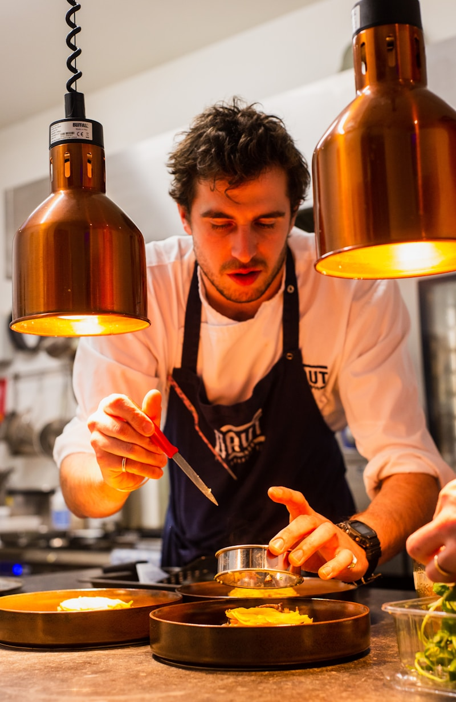
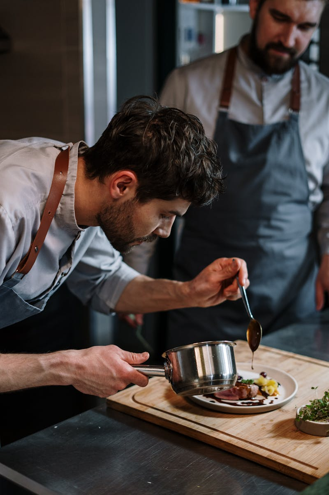
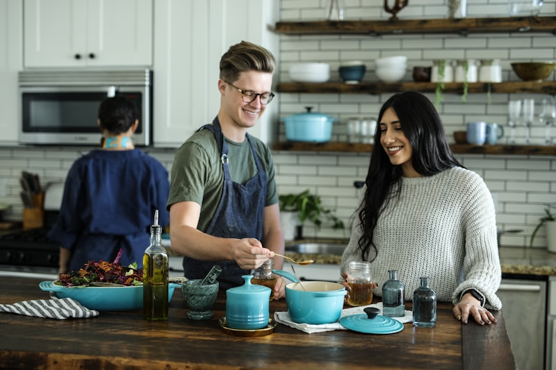

Missão
Proporcionar experiências gastronômicas memoráveis com excelência na culinária mediterrânea, ingredientes frescos e técnicas refinadas. Complementar isso com atendimento acolhedor e experiência digital prática e sofisticada.
Conheça a história por trás do nosso restaurante!
O Restaurante Apollo nasceu do sonho de Ricardo Silva, um empreendedor apaixonado por gastronomia e experiências memoráveis. Aos 38 anos, após anos vivenciando diferentes culturas culinárias e observando tendências internacionais, Ricardo decidiu trazer para Natal um conceito ainda pouco explorado: a união entre a sofisticação da gastronomia mediterrânea e a diversidade da culinária internacional premium.
Fundado há cinco anos, o Apollo surgiu com a proposta de ser mais do que um restaurante — um destino. Inspirado na elegância e no simbolismo do nome “Apollo”, que remete à perfeição, à arte e à harmonia, Ricardo idealizou um espaço onde cada detalhe fosse cuidadosamente pensado: da arquitetura minimalista à apresentação impecável dos pratos.
Desde o início, o restaurante se destacou pelo compromisso com ingredientes frescos, técnicas refinadas e uma equipe altamente qualificada. A cozinha, liderada por profissionais experientes, combina tradição e inovação, criando pratos que equilibram sabor, estética e identidade. Massas artesanais, frutos do mar selecionados e sobremesas sofisticadas tornaram-se marcas registradas da casa.

Hoje, consolidado no mercado local, o Apollo vive um novo momento: expansão e modernização. Sem abrir mão da sua essência, o restaurante busca integrar ainda mais tecnologia e inovação à experiência gastronômica, reforçando seu posicionamento como referência em alta gastronomia na cidade.
Mais do que servir refeições, o Apollo cria memórias — seja em um jantar romântico, uma celebração especial ou um encontro de negócios. Cada visita é pensada para ser única, elegante e inesquecível.

Proporcionar experiências gastronômicas memoráveis com excelência na culinária mediterrânea, ingredientes frescos e técnicas refinadas. Complementar isso com atendimento acolhedor e experiência digital prática e sofisticada.
Ser reconhecido como o principal destino gastronômico de Natal, destacando-se pela inovação, qualidade excepcional e pela criação de momentos memoráveis para cada cliente.
Excelência em culinária, atendimento e ambiente, com paixão por cozinhar e servir bem. Transparência na origem dos ingredientes, no trabalho da equipe e nas histórias por trás de cada prato.
Conheça os profissionais mais talentosos da casa!

Chef executivo
Mestre em culinária italiana com 20 anos de experiência.

Sub - Chef
Mestre em culinária italiana.

Chefs de cozinha
Especialistas em sobremesas.

Chefs de cozinha
Especialistas em pratos premium.